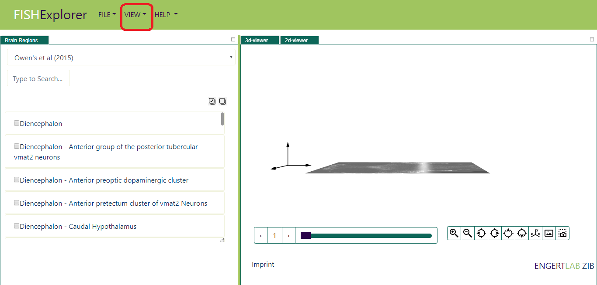
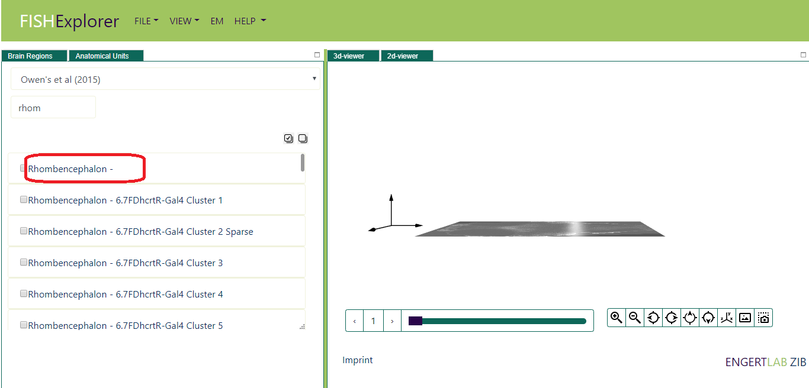
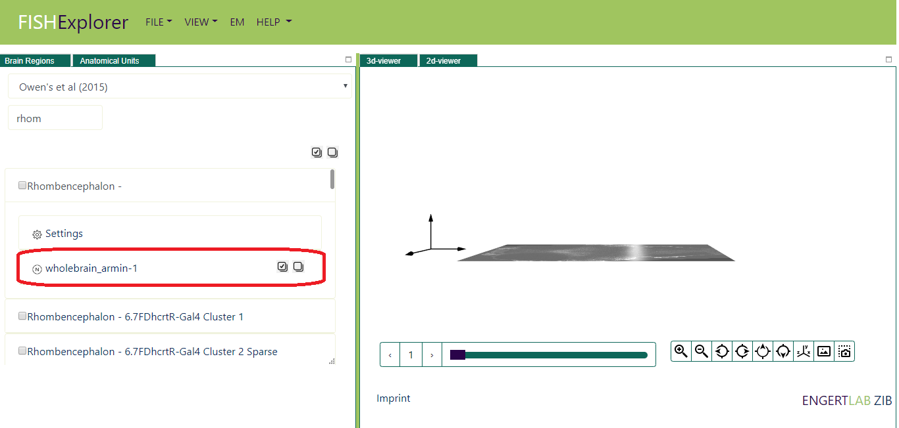
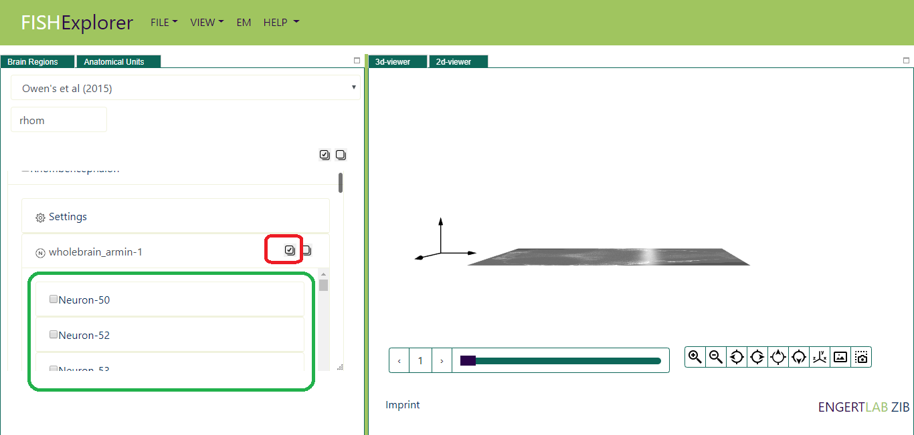
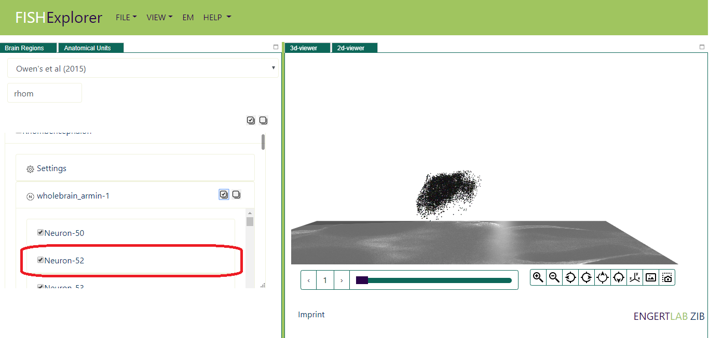
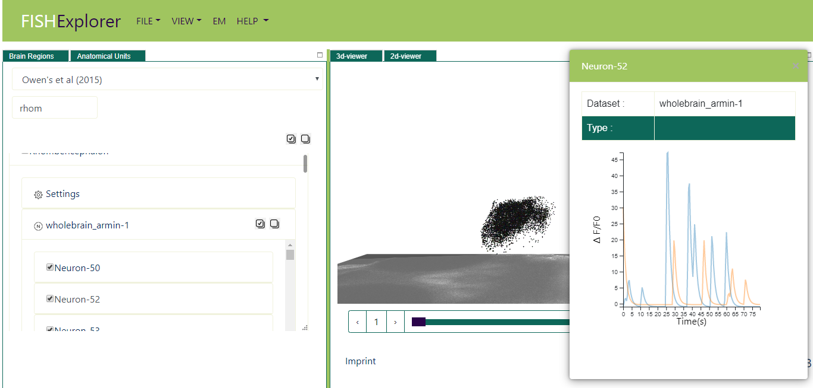

Hierarchical Exploration
-
FishExplorer supports interactive and hierarchical exploration of the whole
zebrafish brain. For example, one can load the cellular data in a particular brain region.
Further, cell properties and responses to stimuli can be visualized by clicking on
the cell and so on..
If you have started FishExplorer newly, you are already in the 3D-Viewer as shown in image below.
- Imagine now that you want to display e.g. the list of neurons wholebrain_armin-1 cellular
dataset in the Rhombencephalon
and also visualize activity of some of the neurons. In order to do that, first search the anatomical
region by typing the first letters in the white searching box (encircled with a red line) in the
list viewer on the right. Alternatively,
you can scroll through the list of regions. The list of regions matching the search criteria will
appear on the screen as shown below.

- Next, click the Rhombencephalon (encircled red in the image above), the wholebrain_armin-1 tab will appear
on the screen as shown below

- Next, click the wholebrain_armin-1 tab (encircled red in the image above), the list of neurons which are spatially
located inside the Rhombencephalon (encircled green in the image above)

-
Next, click the select all neuron button (encircled red in the image above), all the neurons will appear
on the screen as shown below.

- Imagine now you want to visualize the response of stimulus to particular cell e.g. Neuron-52.
Click the cell (encircled red in the image above), the cell properties and its activity will
appear as shown below.
